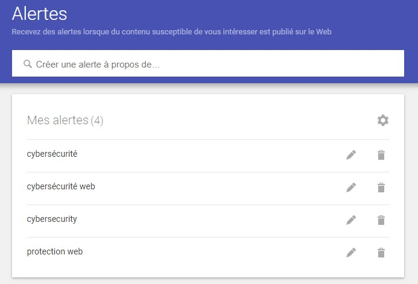
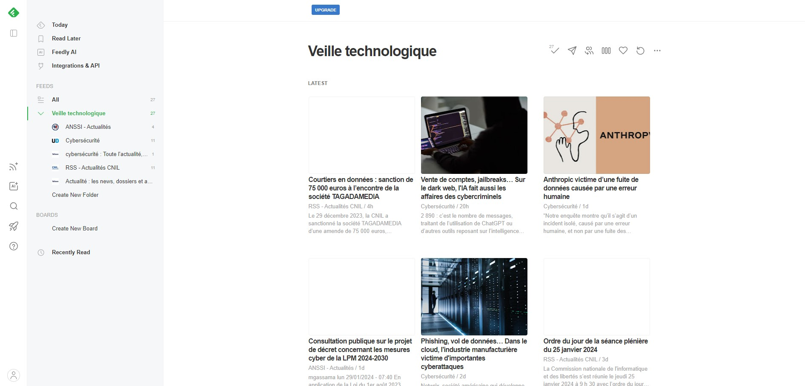

Les futures menaces et moyens de protection des sites web
La veille technologique consiste à collecter, d’analyser et de diffuser des informations
pertinentes sur les évolutions, les tendances et les avancées technologiques dans un
secteur d’activité spécifique. Le but de la veille technologique est de permettre
aux organisations, aux entreprises et aux professionnels de rester informés des
changements technologiques qui pourraient influencer leur domaine d’activité.
Dans le cas du BTS SIO SLAM, il faut faire une veille technologique sur l’informatique.
Cependant, il est plus recommandé de faire une veille technologique sur le développement
informatique ou sur la cybersécurité.
Dans mon cas, j’ai choisi de faire ma veille technologique sur les futures menaces et
moyens de protection des sites web. J’ai choisi ce sujet car la cybersécurité est un
domaine très important dans de nombreux aspects de l’informatique. De plus, la
cybersécurité est un domaine qui est tout le temps en évolution, il y a fréquemment
de nouvelles menaces et de nouveaux moyens de protection. Aussi, j’ai choisi de me
pencher en particularité sur les sites web car l’utilisation de sites web est très
présente dans n’importe quelle entreprise. Ainsi, les sites web sont très ciblés
par les cyberattaques.
Pour faire ma veille technologique, j’ai utilisé plusieurs outils :
■ Ahrefs pour trouver les mots clés les plus recherchés sur Google.
■ Google Alertes pour être averti chaque semaine par e-mail de nouveaux
articles sur Internet qui parlent de mon sujet.
■ Feedly pour suivre les nouvelles publications de certains sites internet.
■ Pearltrees pour trier les informations et ne garder que les plus pertinentes.
Ma page Pearltrees
Ma page Google Alertes

Ma page Feedly

Les futures menaces des sites web :
■ Les sites d'e-commerce sont fréquemment vulnérables aux attaques de bots malveillants.
■ La génération Z est particulièrement exposée aux escroqueries en raison de son
utilisation intensive de la technologie et de sa préférence pour la praticité au
détriment de la sécurité.
■ Les cybercriminels exploitent souvent la publicité de Google pour mettre en avant des
sites web malveillants dans les résultats de recherche.
■ On observe une augmentation des attaques de ransomware.
■ Les attaques basées sur l'intelligence artificielle sont en augmentation.
■ Le phishing augmente également, et l'IA permet de copier des sites web de manière très
efficace.
■ Les cyberattaques commises par des États sont en hausse, notamment en raison des
tensions entre la Russie et l’Ukraine.
■ Les contrefaçons générées par l'IA générative sont en augmentation.
■ Il est désormais possible de simuler une voix humaine en temps réel avec l'IA afin de
contourner l'authentification biométrique et de tromper les équipes de sécurité d'un
site web.
■ L'utilisation de l'IA pour générer des morceaux de code peut introduire des
vulnérabilités qui n'ont pas été anticipées.
■ Le quishing, une forme de phishing utilisant des QR codes redirigeant vers des sites
web malveillants, est en hausse.
■ Le phishing, notamment par email, demeure une menace importante en raison du manque
de sensibilisation des employés à la cybersécurité.
■ L'utilisation de l'IA dans des activités malveillantes rend la cybercriminalité plus
accessible et plus facile.
■ Les deepfakes permettent une usurpation d'identité plus efficace, notamment pour mener
des attaques de phishing.
■ Les ordinateurs quantiques pourraient être suffisamment puissants pour décrypter
n'importe quelle donnée cryptée.
Les futures moyens de protection des sites web :
■ Surveillance des activités et des tendances sur le Dark Web afin d'anticiper les
futures menaces.
■ Anticipation de l'adoption de lois régissant l'utilisation de l'IA.
■ Utilisation d'un logiciel d'analyse pour détecter la présence de sites web malveillants.
■ Adoption du modèle Zero Trust, qui restreint l'accès aux outils nécessaires à
l'entreprise, vérifie l'identité des individus à chaque demande d'accès aux ressources,
et surveille en permanence le réseau interne.
■ Utilisation d'un logiciel d'audit de sécurité des sites web pour une vérification
automatique de leur sécurité.
■ Intégration de l'IA dans les logiciels de cybersécurité pour des performances et des
résultats améliorés.
■ Sensibilisation des utilisateurs et du personnel à la cybersécurité.
■ Utilisation d'algorithmes de cryptographie post-quantique pour se prémunir contre les
attaques de décryptage par les ordinateurs quantiques.